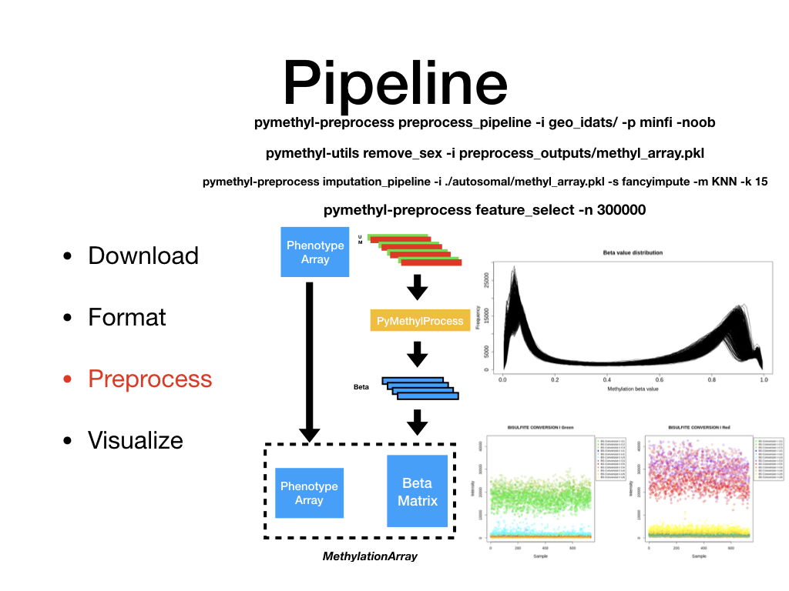
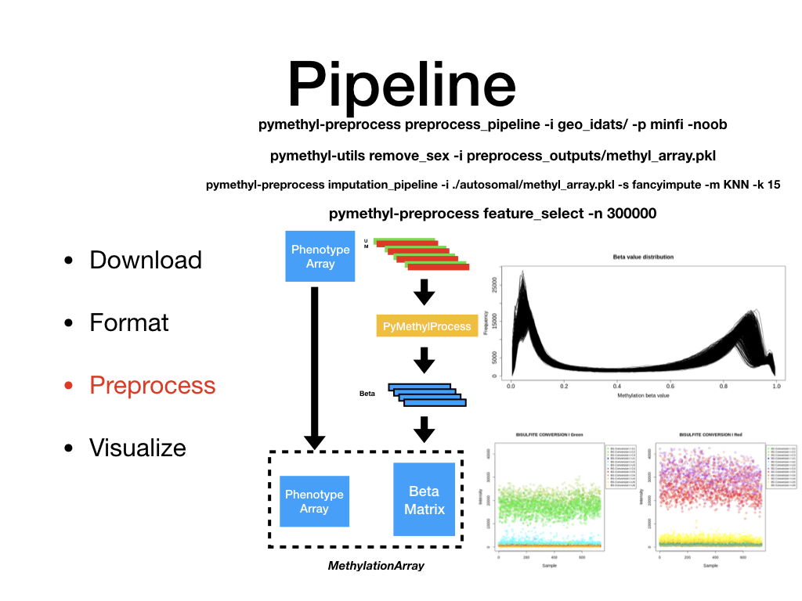
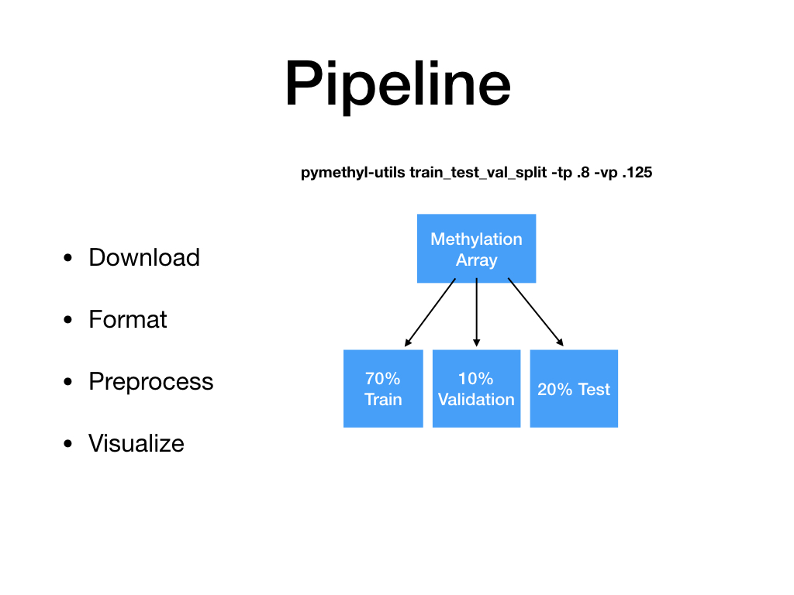
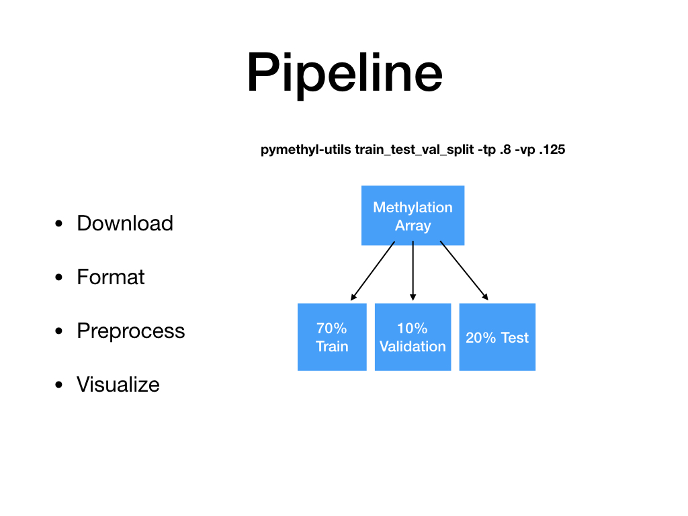

Welcome to PyMethylProcess’s documentation!¶
https://github.com/Christensen-Lab-Dartmouth/PyMethylProcess
To get started, download pymethylprocess using Docker (joshualevy44/pymethylprocess) or PIP (pymethylprocess) and run pymethyl-install_r_dependencies.
See README.md in Github repository for more install directions and for example scripts for running the pipeline (not all datasets may be available on GEO at this time).
There is both an API and CLI available for use. Examples for CLI usage can be found in ./example_scripts.


 

{kind=link}
 

{kind=link}
PreProcessDataTypes.py¶
Contains datatypes core to downloading IDATs, preprocessing IDATs and samplesheets.
-
class
pymethylprocess.PreProcessDataTypes.PreProcessIDAT(idat_dir, minfi=None, enmix=None, base=None, meffil=None)[source]¶ Class that will preprocess IDATs using R pipelines.
- idat_dir
- Location of idats or samplesheet csv.
- minfi
- Rpy2 importr minfi library, default to None will load through rpy2
- enmix
- Rpy2 importr enmix library, default to None will load through rpy2
- base
- Rpy2 importr base library, default to None will load through rpy2
- meffil
- Rpy2 importr meffil library, default to None will load through rpy2
Methods
export_csv(self, output_dir)Export pheno and beta dataframes to CSVs export_pickle(self, output_pickle[, disease])Export pheno and beta dataframes to pickle, stored in python dict that can be loaded into MethylationArray export_sql(self, output_db[, disease])Export pheno and beta dataframes to SQL extract_manifest(self)Get manifest from RGSet. extract_pheno_data(self[, methylset])Extract pheno data from MSet or RGSet, minfi. filter_beta(self)After creating beta, filter out outliers. get_beta(self)Get beta value matrix from minfi after finding RSet. get_meth(self)Get methylation intensity matrix from MSet get_unmeth(self)Get unmethylated intensity matrix from MSet load_idats(self)For minfi pipeline, load IDATs from specified idat_dir. move_jpg(self)Move jpeg files from current working directory to the idat directory. output_pheno_beta(self[, meffil])Get pheno and beta dataframe objects stored as attributes for input to MethylationArray object. plot_original_qc(self, output_dir)Plot QC results from ENmix pipeline and possible minfi. plot_qc_metrics(self, output_dir)Plot QC results from ENmix pipeline and possible minfi. preprocessENmix(self[, n_cores])Run ENmix preprocessing pipeline. preprocessMeffil(self[, n_cores, n_pcs, …])Run meffil preprocessing pipeline with functional normalization. preprocessNoob(self)Run minfi preprocessing with Noob normalization preprocessRAW(self)Run minfi preprocessing with RAW normalization preprocess_enmix_pipeline(self[, n_cores, …])Run complete ENmix or minfi preprocessing pipeline. return_beta(self)Return minfi RSet after having created MSet. to_methyl_array(self[, disease])Convert results from preprocessing into MethylationArray, and directly return MethylationArray object. -
export_csv(self, output_dir)[source]¶ Export pheno and beta dataframes to CSVs
Parameters: - output_dir
Where to store csvs.
-
export_pickle(self, output_pickle, disease='')[source]¶ Export pheno and beta dataframes to pickle, stored in python dict that can be loaded into MethylationArray
Parameters: - output_pickle
Where to store MethylationArray.
- disease
Custom naming scheme for data.
-
export_sql(self, output_db, disease='')[source]¶ Export pheno and beta dataframes to SQL
Parameters: - output_db
Where to store data, sqlite db.
- disease
Custom naming scheme for data.
-
extract_pheno_data(self, methylset=False)[source]¶ Extract pheno data from MSet or RGSet, minfi.
Parameters: - methylset
If MSet has beenn created, set to True, else extract from original RGSet.
-
output_pheno_beta(self, meffil=False)[source]¶ Get pheno and beta dataframe objects stored as attributes for input to MethylationArray object.
Parameters: - meffil
True if ran meffil pipeline.
-
plot_original_qc(self, output_dir)[source]¶ Plot QC results from ENmix pipeline and possible minfi. Still experimental.
Parameters: - output_dir
Where to store plots.
-
plot_qc_metrics(self, output_dir)[source]¶ Plot QC results from ENmix pipeline and possible minfi. Still experimental.
Parameters: - output_dir
Where to store plots.
-
preprocessENmix(self, n_cores=6)[source]¶ Run ENmix preprocessing pipeline.
Parameters: - n_cores
Number of CPUs to use.
-
preprocessMeffil(self, n_cores=6, n_pcs=4, qc_report_fname='qc/report.html', normalization_report_fname='norm/report.html', pc_plot_fname='qc/pc_plot.pdf', useCache=True, qc_only=True, qc_parameters={'p.beadnum.samples': 0.1, 'p.detection.samples': 0.1, 'p.detection.cpgs': 0.1, 'p.beadnum.cpgs': 0.1}, rm_sex=False)[source]¶ Run meffil preprocessing pipeline with functional normalization.
Parameters: - n_cores
Number of CPUs to use.
- n_pcs
Number of principal components to use for functional normalization, set to -1 to autoselect via kneedle algorithm.
- qc_report_fname
HTML filename to store QC report.
- normalization_report_fname
HTML filename to store normalization report
- pc_plot_fname
PDF file to store principal components plot.
- useCache
Use saved QC objects instead of running through QC again.
- qc_only
Perform QC, then save and quit before normalization.
- qc_parameters
Python dictionary with parameters for qc.
- rm_sex
Remove non-autosomal cpgs?
-
preprocess_enmix_pipeline(self, n_cores=6, pipeline='enmix', noob=False, qc_only=False, use_cache=False)[source]¶ Run complete ENmix or minfi preprocessing pipeline.
Parameters: - n_cores
Number CPUs.
- pipeline
Run enmix or minfi
- noob
Noob norm or RAW if minfi running.
- qc_only
Save and quit after only running QC?
- use_cache
Load preexisting RGSet instead of running QC again.
-
class
pymethylprocess.PreProcessDataTypes.PreProcessPhenoData(pheno_sheet, idat_dir, header_line=0)[source]¶ Class that will manipute phenotype samplesheet before preprocessing of IDATs.
- pheno_sheet
- Location of clinical info csv.
- idat_dir
- Location of idats
- header_line
- Where to start reading clinical csv
Methods
concat(self, other_formatted_sheet)Concat multiple PreProcessPhenoData objects, concat their dataframes to accept more than one smaplesheet/dataset. export(self, output_sheet_name)Export pheno data to csv after done with manipulation. format_custom(self, basename_col, …[, …])Custom format clinical sheet if user supplied idats. format_geo(self[, disease_class_column, …])Format clinical sheets if downloaded geo idats. format_tcga(self[, mapping_file])Format clinical sheets if downloaded tcga idats. get_categorical_distribution(self, key[, …])Print categorical distribution, counts for each unique value in phenotype column. merge(self, other_formatted_sheet[, …])Merge multiple PreProcessPhenoData objects, merge their dataframes to accept more than one saplesheet/dataset or add more pheno info. remove_diseases(self, exclude_disease_list, …)Remove samples with certain diseases from disease column. split_key(self, key, subtype_delimiter)Split pheno column by key, with subtype delimiter, eg. -
concat(self, other_formatted_sheet)[source]¶ Concat multiple PreProcessPhenoData objects, concat their dataframes to accept more than one smaplesheet/dataset.
Parameters: - other_formatted_sheet
Other PreProcessPhenoData to concat.
-
export(self, output_sheet_name)[source]¶ Export pheno data to csv after done with manipulation.
Parameters: - output_sheet_name
Output csv name.
-
format_custom(self, basename_col, disease_class_column, include_columns={})[source]¶ Custom format clinical sheet if user supplied idats.
Parameters: - basename_col
Column name of sample names.
- disease_class_column
Disease column of clinical info csv.
- include_columns
Dictionary specifying other columns to include, and new names to assign them to.
-
format_geo(self, disease_class_column='methylation class:ch1', include_columns={})[source]¶ Format clinical sheets if downloaded geo idats.
Parameters: - disease_class_column
Disease column of clinical info csv.
- include_columns
Dictionary specifying other columns to include, and new names to assign them to.
-
format_tcga(self, mapping_file='idat_filename_case.txt')[source]¶ Format clinical sheets if downloaded tcga idats.
Parameters: - mapping_file
Maps uuids to proper tcga sample names, should be downloaded with tcga clinical information.
-
get_categorical_distribution(self, key, disease_only=False, subtype_delimiter=', ')[source]¶ Print categorical distribution, counts for each unique value in phenotype column.
Parameters: - key
Phenotype Column.
- disease_only
Whether to split phenotype column entries by delimiter.
- subtype_delimiter
Subtype delimiter to split on.
-
merge(self, other_formatted_sheet, use_second_sheet_disease=True, no_disease_merge=False)[source]¶ Merge multiple PreProcessPhenoData objects, merge their dataframes to accept more than one saplesheet/dataset or add more pheno info.
Parameters: - other_formatted_sheet
Other PreProcessPhenoData to merge.
- use_second_sheet_disease
Change disease column to that of second sheet instead of first.
- no_disease_merge
Keep both disease columns from both sheets.
-
remove_diseases(self, exclude_disease_list, low_count, disease_only, subtype_delimiter)[source]¶ Remove samples with certain diseases from disease column.
Parameters: - exclude_disease_list
List containing diseases to remove.
- low_count
Remove samples that have less than x disease occurances in column.
- disease_only
Whether to split phenotype column entries by delimiter.
- subtype_delimiter
Subtype delimiter to split on.
-
class
pymethylprocess.PreProcessDataTypes.TCGADownloader[source]¶ Downloads TCGA and GEO IDAT and clinical data
Methods
download_clinical(self, output_dir)Download TCGA Clinical Data. download_geo(self, query, output_dir)Download GEO IDATs. download_tcga(self, output_dir)Download TCGA IDATs. -
download_clinical(self, output_dir)[source]¶ Download TCGA Clinical Data.
Parameters: - output_dir
Where to output clinical data csv.
-
MethylationDataTypes.py¶
Contains datatypes core to storing beta and phenotype methylation data, and imputation.
-
class
pymethylprocess.MethylationDataTypes.ImputerObject(solver, method, opts={})[source]¶ Class that stores and accesses different types of imputers. Construct sklearn-like imputer given certain input arguments.
- solver
- Library for imputation, eg. sklearn, fancyimpute.
- method
- Imputation method in library, named.
- opts
- Additional options to assign to imputer.
Methods
return_imputer(self)Return initialized sklearn-like imputer.
-
class
pymethylprocess.MethylationDataTypes.MethylationArray(pheno_df, beta_df, name='')[source]¶ Stores beta and phenotype information and performs various operations. Initialize MethylationArray object by inputting dataframe of phenotypes and dataframe of beta values with samples as index.
- pheno_df
- Phenotype dataframe (samples x covariates)
- beta_df
- Beta Values Dataframe (samples x cpgs)
Methods
bin_column(self, col, n_bins)Turn continuous variable/covariate into categorical bins. categorical_breakdown(self, key)Print categorical distribution, counts for each unique value in phenotype column. feature_select(self, n_top_cpgs[, …])Perform unsupervised feature selection on MethylationArray. from_pickle(input_pickle)Load MethylationArray stored in pickle. groupby(self, key)Groupby for Methylation Array. impute(self, imputer)Perform imputation on NaN beta vaues. merge_preprocess_sheet(self, …)Feed in another phenotype dataframe that will be merged with existing phenotype array. overwrite_pheno_data(self, preprocess_sample_df)Feed in another phenotype dataframe that will overwrite overlapping keys of existing phenotype array. remove_missingness(self[, cpg_threshold, …])Remove samples and CpGs with certain level of missingness.. remove_na_samples(self, outcome_cols)Remove samples of MethylationArray who have missing values in phenotype column. remove_whitespace(self, key)Remove whitespaces from phenotype column. return_cpgs(self)Return list of cpgs of MethylationArray return_idx(self)Return sample names of MethylationArray. return_raw_beta_array(self)Return numpy array of methylation beta vaues. return_shape(self)Return dimensionality and number of samples of beta matrix. split_by_subtype(self, disease_only, …)Split MethylationArray into generator of MethylationArrays by phenotype column. split_key(self, key, subtype_delimiter)Manipulate an entire phenotype column, splitting each element up by some delimiter. split_train_test(self[, train_p, …])Split MethylationArray into training and test sets, with option to stratify by categorical covariate. subsample(self[, key, n_samples, frac, …])Subsample MethylationArray, make the set randomly smaller. subset_cpgs(self, cpgs)Subset beta matrix by list of Cpgs. subset_index(self, index)Subset MethylationArray by samples. write_csvs(self, output_dir)Write phenotype data and beta values to csvs. write_db(self, conn[, disease])Store phenotype data and beta values in SQL database. write_pickle(self, output_pickle[, disease])Store phenotype data and beta values in pickle file. export -
bin_column(self, col, n_bins)[source]¶ Turn continuous variable/covariate into categorical bins. Returns name of new column and updates phenotype matrix to reflect this change.
Parameters: - col
Continuous column of phenotype array to bin.
- n_bins
Number of bins to create.
-
categorical_breakdown(self, key)[source]¶ Print categorical distribution, counts for each unique value in phenotype column.
Parameters: - key
Phenotype Column.
-
feature_select(self, n_top_cpgs, feature_selection_method='mad', metric='correlation', nn=10)[source]¶ Perform unsupervised feature selection on MethylationArray.
Parameters: - n_top_cpgs
Number of CpGs to retain.
- feature_selection_method
Method to perform selection.
- metric
If considering structural feature selection like SPEC, use this distance metric.
- nn
Number of nearest neighbors.
-
classmethod
from_pickle(input_pickle)[source]¶ Load MethylationArray stored in pickle.
Usage: MethylationArray.from_pickle([input_pickle])
Parameters: - input_pickle
Stored MethylationArray pickle.
-
groupby(self, key)[source]¶ Groupby for Methylation Array. Returns generator of methylation arrays grouped by key.
Parameters: - preprocess_sample_df
New phenotype dataframe.
-
impute(self, imputer)[source]¶ Perform imputation on NaN beta vaues. Input imputater returned from ImputerObject.
Parameters: - imputer
Type of imputer object, in sklearn type interface.
-
merge_preprocess_sheet(self, preprocess_sample_df)[source]¶ Feed in another phenotype dataframe that will be merged with existing phenotype array.
Parameters: - preprocess_sample_df
New phenotype dataframe.
-
overwrite_pheno_data(self, preprocess_sample_df)[source]¶ Feed in another phenotype dataframe that will overwrite overlapping keys of existing phenotype array.
Parameters: - preprocess_sample_df
New phenotype dataframe.
-
remove_missingness(self, cpg_threshold=None, sample_threshold=None)[source]¶ Remove samples and CpGs with certain level of missingness..
Parameters: - cpg_threshold
If more than fraction of Samples for this CpG are missing, remove cpg.
- sample_threshold
If more than fraction of CpGs for this sample are missing, remove sample.
-
remove_na_samples(self, outcome_cols)[source]¶ Remove samples of MethylationArray who have missing values in phenotype column.
Parameters: - outcome_cols
Phenotype columns, if any rows contain missing values, samples are removed.
-
remove_whitespace(self, key)[source]¶ Remove whitespaces from phenotype column.
Parameters: - key
Phenotype column.
-
split_by_subtype(self, disease_only, subtype_delimiter)[source]¶ Split MethylationArray into generator of MethylationArrays by phenotype column. Much akin to groupby. Only splits from disease column.
Parameters: - disease_only
Consider disease superclass.
- subtype_delimiter
How to break up disease column if using disease_only.
-
split_key(self, key, subtype_delimiter)[source]¶ Manipulate an entire phenotype column, splitting each element up by some delimiter.
Parameters: - key
Phenotype column.
- subtype_delimiter
How to break up strings in columns. S1,s2 -> S1 for instance.
-
split_train_test(self, train_p=0.8, stratified=True, disease_only=False, key='disease', subtype_delimiter=', ', val_p=0.0)[source]¶ Split MethylationArray into training and test sets, with option to stratify by categorical covariate.
Parameters: - train_p
Fraction of methylation array to use as training set.
- stratified
Whether to stratify by categorical variable.
- disease_only
Consider disease superclass by some delimiter. For instance if disease is S1,s2, superclass would be S1.
- key
Column to stratify on.
- subtype_delimiter
How to split disease column into super/subclass.
- val_p
If set greater than 0, will create additional validation set, fraction of which is broken off from training set.
-
subsample(self, key='disease', n_samples=None, frac=None, categorical=False)[source]¶ Subsample MethylationArray, make the set randomly smaller.
Parameters: - key
If stratifying, use this column of pheno array.
- n_samples
Number of samples to consider overall, or per stratum.
- frac
Alternative to n_samples, where x frac of array or stratum is considered.
- categorical
Whether to stratify by column.
-
subset_cpgs(self, cpgs)[source]¶ Subset beta matrix by list of Cpgs. Parameters ———- cpgs
Cpgs to subset by.
-
subset_index(self, index)[source]¶ Subset MethylationArray by samples.
Parameters: - index
Sample names to subset by.
-
write_csvs(self, output_dir)[source]¶ Write phenotype data and beta values to csvs.
Parameters: - output_dir
Directory to output csv files.
-
class
pymethylprocess.MethylationDataTypes.MethylationArrays(list_methylation_arrays)[source]¶ Literally a list of methylation arrays, with methods operate on these arrays that is memory efficient. Initialize with list of methylation arrays. Can optionally leave list empty or with one element.
- list_methylation_arrays
- List of methylation arrays.
Methods
combine(self[, array_generator])Combine the list of methylation arrays into one array via concatenation of beta matrices and phenotype arrays. impute(self, imputer)Impute all methylation arrays. write_dbs(self, conn)Write list of methylation arrays to SQL database. write_pkls(self, pkl)Write list of methylation arrays to single pickle. -
combine(self, array_generator=None)[source]¶ Combine the list of methylation arrays into one array via concatenation of beta matrices and phenotype arrays.
Parameters: - array_generator
Generator of additional methylation arrays for computational memory minimization.
-
impute(self, imputer)[source]¶ Impute all methylation arrays.
Parameters: - imputer
Type of imputation, sklearn-like.
-
pymethylprocess.MethylationDataTypes.extract_pheno_beta_df_from_folder(folder)[source]¶ Return phenotype and beta dataframes from specified folder with csv.
Parameters: - folder
Input folder.
meffil_functions.py¶
Contains a few R functions that interact with meffil and minfi.
-
pymethylprocess.meffil_functions.est_cell_counts_IDOL(rgset, library)[source]¶ Given RGSet object, estimate cell counts for 450k/850k using reference approach via IDOL library.
Parameters: - rgset
RGSet object stored in python via rpy2
- library
What type of CpG library to use.
-
pymethylprocess.meffil_functions.est_cell_counts_meffil(qc_list, cell_type_reference)[source]¶ Given QCObject list R object, estimate cell counts using reference approach via meffil.
Parameters: - qc_list
R list containing qc objects.
- cell_type_reference
Reference blood/tissue set.
-
pymethylprocess.meffil_functions.est_cell_counts_minfi(rgset)[source]¶ Given RGSet object, estimate cell counts using reference approach via minfi.
Parameters: - rgset
RGSet object stored in python via rpy2
-
pymethylprocess.meffil_functions.load_detection_p_values_beadnum(qc_list, n_cores)[source]¶ Return list of detection p-value matrix and bead number matrix.
Parameters: - qc_list
R list containing qc objects.
- n_cores
Number of cores to use in computation.
-
pymethylprocess.meffil_functions.r_autosomal_cpgs(array_type='450k')[source]¶ Return list of autosomal cpg probes per platform.
Parameters: - array_type
450k/850k array?
-
pymethylprocess.meffil_functions.r_snp_cpgs(array_type='450k')[source]¶ Return list of SNP cpg probes per platform.
Parameters: - array_type
450k/850k array?
-
pymethylprocess.meffil_functions.remove_sex(beta, array_type='450k')[source]¶ Remove non-autosomal cpgs from beta matrix.
Parameters: - array_type
450k/850k array?
-
pymethylprocess.meffil_functions.set_missing(beta, pval_beadnum, detection_val=1e-06)[source]¶ Set missing beta values to NA, taking into account detection values and bead number thesholds.
Parameters: - pval_beadnum
Detection pvalues and number of beads per cpg/samples
- detection_val
If threshold to set site to missingness based on p-value detection.
general_machine_learning.py¶
Contains a machine learning class to perform scikit-learn like operations, along with held-out hyperparameter grid search.
-
class
pymethylprocess.general_machine_learning.MachineLearning(model, options, grid={}, labelencode=False, n_eval=0)[source]¶ Machine learning class to run sklearn-like pipeline on MethylationArray data. Initialize object with scikit-learn model, and optionally supply a hyperparameter search grid.
- model
- Scikit-learn-like model, classification, regression, dimensionality reduction, clustering etc.
- options
- Options to supply model in form of dictionary.
- grid
- Alternatively, supply search grid to search for bets hyperparameters.
- labelencode
- T/F encode string labels.
- n_eval
- Number of evaluations for randomized grid search, if set to 0, perform exhaustive grid search
Methods
assign_results_to_pheno_col(self, …)Assign results to new phenotype column. fit(self, train_methyl_array[, …])Fit data to model. fit_predict(self, train_methyl_array[, …])Fit and predict training data. fit_transform(self, train_methyl_array[, …])Fit and transform to training data. predict(self, test_methyl_array)Make new predictions on test methylation array. return_outcome_metric(self, methyl_array, …)Supply metric to evaluate results. store_results(self, output_pkl[, results_dict])Store results in pickle file. transform(self, test_methyl_array)Transform test methylation array. transform_results_to_beta(self, …)Transform beta matrix into reduced beta matrix and store. -
assign_results_to_pheno_col(self, methyl_array, new_col, output_pkl)[source]¶ Assign results to new phenotype column.
Parameters: - methyl_array
MethylationArray.
- new_col
New column name.
- output_pkl
Output pickle to dump MethylationArray to.
-
fit(self, train_methyl_array, val_methyl_array=None, outcome_cols=None)[source]¶ Fit data to model.
Parameters: - train_methyl_array
Training MethylationArray.
- val_methyl_array
Validation MethylationArray. Can set to None.
- outcome_cols
Set to none if not needed, but phenotype column to train on, can be multiple.
-
fit_predict(self, train_methyl_array, outcome_cols=None)[source]¶ Fit and predict training data.
Parameters: - train_methyl_array
Training MethylationArray.
- outcome_cols
Set to none if not needed, but phenotype column to train on, can be multiple.
-
fit_transform(self, train_methyl_array, outcome_cols=None)[source]¶ Fit and transform to training data.
Parameters: - train_methyl_array
Training MethylationArray.
- outcome_cols
Set to none if not needed, but phenotype column to train on, can be multiple.
-
predict(self, test_methyl_array)[source]¶ Make new predictions on test methylation array.
Parameters: - test_methyl_array
Testing MethylationArray.
-
return_outcome_metric(self, methyl_array, outcome_cols, metric, run_bootstrap=False)[source]¶ Supply metric to evaluate results.
Parameters: - methyl_array
MethylationArray to evaluate.
- outcome_cols
Outcome phenotype columns.
- metric
Sklearn evaluation metric.
- run_bootstrap
Make 95% CI from 1k bootstraps.
-
store_results(self, output_pkl, results_dict={})[source]¶ Store results in pickle file.
Parameters: - output_pkl
Output pickle to dump results to.
- results_dict
Supply own results dict to be dumped.
pymethyl-install¶
pymethyl-install [OPTIONS] COMMAND [ARGS]...
Options
-
--version¶ Show the version and exit.
change_gcc_path¶
Change GCC and G++ paths if don’t have version 7.2.0. [Experimental]
pymethyl-install change_gcc_path [OPTIONS]
install_custom¶
Installs bioconductor packages.
pymethyl-install install_custom [OPTIONS]
Options
-
-p,--package<package>¶ Custom packages. [default: ENmix]
-
-m,--manager¶ Use BiocManager (recommended).
install_minfi_others¶
Installs minfi and other dependencies.
pymethyl-install install_minfi_others [OPTIONS]
install_r_packages¶
Installs r packages.
pymethyl-install install_r_packages [OPTIONS]
Options
-
-p,--package<package>¶ Custom packages. [default: ]
install_some_deps¶
Installs bioconductor, minfi, enmix, tcga biolinks, and meffil.
pymethyl-install install_some_deps [OPTIONS]
pymethyl-visualize¶
pymethyl-visualize [OPTIONS] COMMAND [ARGS]...
Options
-
--version¶ Show the version and exit.
plot_cell_type_results¶
Plot csv containing cell type results into side by side boxplots.
pymethyl-visualize plot_cell_type_results [OPTIONS]
Options
-
-i,--input_csv<input_csv>¶ Input csv. [default: cell_type_estimates.csv]
-
-o,--outfilename<outfilename>¶ Output png. [default: visualizations/cell_type_results.png]
-
-cols,--plot_cols<plot_cols>¶ Plot columns. [default: Gran, CD4T, CD8T, Bcell, Mono, NK, gMDSC]
-
-fs,--font_scale<font_scale>¶ Font scaling [default: 1.0]
plot_heatmap¶
Plot heatmap from CSV file.
pymethyl-visualize plot_heatmap [OPTIONS]
Options
-
-i,--input_csv<input_csv>¶ Input csv. [default: ]
-
-o,--outfilename<outfilename>¶ Output png. [default: output.png]
-
-idx,--index_col<index_col>¶ Index load dataframe [default: 0]
-
-fs,--font_scale<font_scale>¶ Font scaling [default: 1.0]
-
-min,--min_val<min_val>¶ Min heat val [default: 0.0]
-
-max,--max_val<max_val>¶ Max heat val, if -1, defaults to None [default: 1.0]
-
-a,--annot¶ Annotate heatmap [default: False]
-
-n,--norm¶ Normalize matrix data [default: False]
-
-c,--cluster¶ Cluster matrix data [default: False]
-
-m,--matrix_type<matrix_type>¶ Type of matrix supplied [default: none]
-
-x,--xticks¶ Show x ticks [default: False]
-
-y,--yticks¶ Show y ticks [default: False]
-
-t,--transpose¶ Transpose matrix data [default: False]
-
-col,--color_column<color_column>¶ Color column. [default: color]
transform_plot¶
Dimensionality reduce VAE or original beta values using UMAP and plot using plotly.
pymethyl-visualize transform_plot [OPTIONS]
Options
-
-i,--input_pkl<input_pkl>¶ Input database for beta and phenotype data. [default: ./final_preprocessed/methyl_array.pkl]
-
-c,--column_of_interest<column_of_interest>¶ Column extract from phenotype data. [default: disease]
-
-o,--output_file<output_file>¶ Output visualization. [default: ./visualization.html]
-
-nn,--n_neighbors<n_neighbors>¶ Number of neighbors UMAP. [default: 5]
-
-a,--axes_off¶ Whether to turn axes on or off.
-
-s,--supervised¶ Supervise umap embedding.
-
-d,--min_dist<min_dist>¶ UMAP min distance. [default: 0.1]
-
-m,--metric<metric>¶ Reduction metric. [default: euclidean]
-
-cc,--case_control_override¶ Add controls from case_control column and override current disease for classification tasks. [default: False]
pymethyl-preprocess¶
pymethyl-preprocess [OPTIONS] COMMAND [ARGS]...
Options
-
--version¶ Show the version and exit.
batch_deploy_preprocess¶
Deploy multiple preprocessing jobs in series or parallel.
pymethyl-preprocess batch_deploy_preprocess [OPTIONS]
Options
-
-n,--n_cores<n_cores>¶ Number cores to use for preprocessing. [default: 6]
-
-i,--subtype_output_dir<subtype_output_dir>¶ Output subtypes pheno csv. [default: ./preprocess_outputs/]
-
-m,--meffil¶ Preprocess using meffil.
-
-t,--torque¶ Job submission torque.
-
-r,--run¶ Actually run local job or just print out command.
-
-s,--series¶ Run commands in series.
-
-p,--pc_qc_parameters_csv<pc_qc_parameters_csv>¶ For meffil, qc parameters and pcs for final qc and functional normalization. [default: ./preprocess_outputs/pc_qc_parameters.csv]
-
-u,--use_cache¶ If this is selected, loads qc results rather than running qc again. Only works for meffil selection.
-
-qc,--qc_only¶ Only perform QC for meffil pipeline, caches results into rds file for loading again, only works if use_cache is false.
-
-c,--chunk_size<chunk_size>¶ If not series, chunk up and run these number of commands at once.. -1 means all commands at once.
combine_methylation_arrays¶
If split MethylationArrays by subtype for either preprocessing or imputation, can use to recombine data for downstream step.
pymethyl-preprocess combine_methylation_arrays [OPTIONS]
Options
-
-i,--input_pkls<input_pkls>¶ Input pickles for beta and phenotype data. [default: ./preprocess_outputs/methyl_array.pkl]
-
-d,--optional_input_pkl_dir<optional_input_pkl_dir>¶ Auto grab input pkls. [default: ]
-
-o,--output_pkl<output_pkl>¶ Output database for beta and phenotype data. [default: ./combined_outputs/methyl_array.pkl]
-
-e,--exclude<exclude>¶ If -d selected, these diseases will be excluded from study. [default: ]
concat_sample_sheets¶
Concat two sample files for more fields for minfi+ input, adds more samples.
pymethyl-preprocess concat_sample_sheets [OPTIONS]
Options
-
-s1,--sample_sheet1<sample_sheet1>¶ Clinical information downloaded from tcga/geo/custom, formatted using create_sample_sheet. [default: ./tcga_idats/clinical_info1.csv]
-
-s2,--sample_sheet2<sample_sheet2>¶ Clinical information downloaded from tcga/geo/custom, formatted using create_sample_sheet. [default: ./tcga_idats/clinical_info2.csv]
-
-os,--output_sample_sheet<output_sample_sheet>¶ CSV for minfi input. [default: ./tcga_idats/minfiSheet.csv]
create_sample_sheet¶
Create sample sheet for input to minfi, meffil, or enmix.
pymethyl-preprocess create_sample_sheet [OPTIONS]
Options
-
-is,--input_sample_sheet<input_sample_sheet>¶ Clinical information downloaded from tcga/geo/custom. [default: ./tcga_idats/clinical_info.csv]
-
-s,--source_type<source_type>¶ Source type of data. [default: tcga]
-
-i,--idat_dir<idat_dir>¶ Idat directory. [default: ./tcga_idats/]
-
-os,--output_sample_sheet<output_sample_sheet>¶ CSV for minfi input. [default: ./tcga_idats/minfiSheet.csv]
-
-m,--mapping_file<mapping_file>¶ Mapping file from uuid to TCGA barcode. Downloaded using download_tcga. [default: ./idat_filename_case.txt]
-
-l,--header_line<header_line>¶ Line to begin reading csv/xlsx. [default: 0]
-
-d,--disease_class_column<disease_class_column>¶ Disease classification column, for custom and geo datasets. [default: methylation class:ch1]
-
-b,--basename_col<basename_col>¶ Basename classification column, for custom datasets. [default: Sentrix ID (.idat)]
-
-c,--include_columns_file<include_columns_file>¶ Custom columns file containing columns to keep, separated by n. Add a tab for each line if you wish to rename columns: original_name t new_column_name [default: ]
download_clinical¶
Download all TCGA 450k clinical info.
pymethyl-preprocess download_clinical [OPTIONS]
Options
-
-o,--output_dir<output_dir>¶ Output directory for exported idats. [default: ./tcga_idats/]
download_geo¶
Download geo methylation study idats and clinical info.
pymethyl-preprocess download_geo [OPTIONS]
Options
-
-g,--geo_query<geo_query>¶ GEO study to query. [default: ]
-
-o,--output_dir<output_dir>¶ Output directory for exported idats. [default: ./geo_idats/]
download_tcga¶
Download all tcga 450k data.
pymethyl-preprocess download_tcga [OPTIONS]
Options
-
-o,--output_dir<output_dir>¶ Output directory for exported idats. [default: ./tcga_idats/]
feature_select¶
Filter CpGs by taking x top CpGs with highest mean absolute deviation scores or via spectral feature selection.
pymethyl-preprocess feature_select [OPTIONS]
Options
-
-i,--input_pkl<input_pkl>¶ Input database for beta and phenotype data. [default: ./imputed_outputs/methyl_array.pkl]
-
-o,--output_pkl<output_pkl>¶ Output database for beta and phenotype data. [default: ./final_preprocessed/methyl_array.pkl]
-
-n,--n_top_cpgs<n_top_cpgs>¶ Number cpgs to include with highest variance across population. [default: 300000]
-
-f,--feature_selection_method<feature_selection_method>¶
-
-mm,--metric<metric>¶
-
-nn,--n_neighbors<n_neighbors>¶ Number neighbors for feature selection, default enacts rbf kernel. [default: 0]
-
-m,--mad_top_cpgs<mad_top_cpgs>¶ Number cpgs to apply mad filtering first before more sophisticated feature selection. If 0 or primary feature selection is mad, no mad pre-filtering. [default: 0]
get_categorical_distribution¶
Get categorical distribution of columns of sample sheet.
pymethyl-preprocess get_categorical_distribution [OPTIONS]
Options
-
-is,--formatted_sample_sheet<formatted_sample_sheet>¶ Clinical information downloaded from tcga/geo/custom, formatted using create_sample_sheet. [default: ./tcga_idats/minfiSheet.csv]
-
-k,--key<key>¶ Column of csv to print statistics for. [default: disease]
-
-d,--disease_only¶ Only look at disease, or text before subtype_delimiter.
-
-sd,--subtype_delimiter<subtype_delimiter>¶ Delimiter for disease extraction. [default: ,]
imputation_pipeline¶
Imputation of subtype or no subtype using various imputation methods.
pymethyl-preprocess imputation_pipeline [OPTIONS]
Options
-
-i,--input_pkl<input_pkl>¶ Input database for beta and phenotype data. [default: ./combined_outputs/methyl_array.pkl]
-
-ss,--split_by_subtype¶ Imputes CpGs by subtype before combining again.
-
-m,--method<method>¶ Method of imputation. [default: KNN]
-
-s,--solver<solver>¶ Imputation library. [default: fancyimpute]
-
-k,--n_neighbors<n_neighbors>¶ Number neighbors for imputation if using KNN. [default: 5]
-
-r,--orientation<orientation>¶ Impute CpGs or samples. [default: Samples]
-
-o,--output_pkl<output_pkl>¶ Output database for beta and phenotype data. [default: ./imputed_outputs/methyl_array.pkl]
-
-n,--n_top_cpgs<n_top_cpgs>¶ Number cpgs to include with highest variance across population. Greater than 0 allows for mad filtering during imputation to skip mad step. [default: 0]
-
-f,--feature_selection_method<feature_selection_method>¶
-
-mm,--metric<metric>¶
-
-nfs,--n_neighbors_fs<n_neighbors_fs>¶ Number neighbors for feature selection, default enacts rbf kernel. [default: 0]
-
-d,--disease_only¶ Only look at disease, or text before subtype_delimiter.
-
-sd,--subtype_delimiter<subtype_delimiter>¶ Delimiter for disease extraction. [default: ,]
-
-st,--sample_threshold<sample_threshold>¶ Value between 0 and 1 for NaN removal. If samples has sample_threshold proportion of cpgs missing, then remove sample. Set to -1 to not remove samples. [default: -1.0]
-
-ct,--cpg_threshold<cpg_threshold>¶ Value between 0 and 1 for NaN removal. If cpgs has cpg_threshold proportion of samples missing, then remove cpg. Set to -1 to not remove samples. [default: -1.0]
meffil_encode¶
Reformat file for meffil input.
pymethyl-preprocess meffil_encode [OPTIONS]
Options
-
-is,--input_sample_sheet<input_sample_sheet>¶ CSV for minfi input. [default: ./tcga_idats/minfiSheet.csv]
-
-os,--output_sample_sheet<output_sample_sheet>¶ CSV for minfi input. [default: ./tcga_idats/minfiSheet.csv]
merge_sample_sheets¶
Merge two sample files for more fields for minfi+ input.
pymethyl-preprocess merge_sample_sheets [OPTIONS]
Options
-
-s1,--sample_sheet1<sample_sheet1>¶ Clinical information downloaded from tcga/geo/custom, formatted using create_sample_sheet. [default: ./tcga_idats/clinical_info1.csv]
-
-s2,--sample_sheet2<sample_sheet2>¶ Clinical information downloaded from tcga/geo/custom, formatted using create_sample_sheet. [default: ./tcga_idats/clinical_info2.csv]
-
-os,--output_sample_sheet<output_sample_sheet>¶ CSV for minfi input. [default: ./tcga_idats/minfiSheet.csv]
-
-d,--second_sheet_disease¶ Use second sheet’s disease column.
-
-nd,--no_disease_merge¶ Don’t merge disease columns.
na_report¶
Print proportion of missing values throughout dataset.
pymethyl-preprocess na_report [OPTIONS]
Options
-
-i,--input_pkl<input_pkl>¶ Input database for beta and phenotype data. [default: ./preprocess_outputs/methyl_array.pkl]
-
-o,--output_dir<output_dir>¶ Output database for na report. [default: ./na_report/]
-
-r,--head_directory¶ -i option becomes directory, and searches there for multiple input pickles.
preprocess_pipeline¶
Perform preprocessing of idats using enmix or meffil.
pymethyl-preprocess preprocess_pipeline [OPTIONS]
Options
-
-i,--idat_dir<idat_dir>¶ Idat dir for one sample sheet, alternatively can be your phenotype sample sheet. [default: ./tcga_idats/]
-
-n,--n_cores<n_cores>¶ Number cores to use for preprocessing. [default: 6]
-
-o,--output_pkl<output_pkl>¶ Output database for beta and phenotype data. [default: ./preprocess_outputs/methyl_array.pkl]
-
-m,--meffil¶ Preprocess using meffil.
-
-pc,--n_pcs<n_pcs>¶ For meffil, number of principal components for functional normalization. If set to -1, then PCs are selected using elbow method. [default: -1]
-
-p,--pipeline<pipeline>¶ If not meffil, preprocess using minfi or enmix. [default: enmix]
-
-noob,--noob_norm¶ Run noob normalization of minfi selected.
-
-u,--use_cache¶ If this is selected, loads qc results rather than running qc again and update with new qc parameters. Only works for meffil selection. Minfi and enmix just loads RG Set.
-
-qc,--qc_only¶ Only perform QC for meffil pipeline, caches results into rds file for loading again, only works if use_cache is false. Minfi and enmix just saves the RGSet before preprocessing.
-
-bns,--p_beadnum_samples<p_beadnum_samples>¶ From meffil documentation, “fraction of probes that failed the threshold of 3 beads”. [default: 0.05]
-
-pds,--p_detection_samples<p_detection_samples>¶ From meffil documentation, “fraction of probes that failed a detection.pvalue threshold of 0.01”. [default: 0.05]
-
-bnc,--p_beadnum_cpgs<p_beadnum_cpgs>¶ From meffil documentation, “fraction of samples that failed the threshold of 3 beads”. [default: 0.05]
-
-pdc,--p_detection_cpgs<p_detection_cpgs>¶ From meffil documentation, “fraction of samples that failed a detection.pvalue threshold of 0.01”. [default: 0.05]
-
-sc,--sex_cutoff<sex_cutoff>¶ From meffil documentation, “difference of total median intensity for Y chromosome probes and X chromosome probes”. [default: -2]
-
-sd,--sex_sd<sex_sd>¶ From meffil documentation, “sex detection outliers if outside this range”. [default: 5]
remove_diseases¶
Exclude diseases from study by count number or exclusion list.
pymethyl-preprocess remove_diseases [OPTIONS]
Options
-
-is,--formatted_sample_sheet<formatted_sample_sheet>¶ Clinical information downloaded from tcga/geo/custom, formatted using create_sample_sheet. [default: ./tcga_idats/clinical_info.csv]
-
-e,--exclude_disease_list<exclude_disease_list>¶ List of conditions to exclude, from disease column, comma delimited. [default: ]
-
-os,--output_sheet_name<output_sheet_name>¶ CSV for minfi input. [default: ./tcga_idats/minfiSheet.csv]
-
-l,--low_count<low_count>¶ Remove diseases if they are below a certain count, default this is not used. [default: 0]
-
-d,--disease_only¶ Only look at disease, or text before subtype_delimiter.
-
-sd,--subtype_delimiter<subtype_delimiter>¶ Delimiter for disease extraction. [default: ,]
split_preprocess_input_by_subtype¶
Split preprocess input samplesheet by disease subtype.
pymethyl-preprocess split_preprocess_input_by_subtype [OPTIONS]
Options
-
-i,--idat_csv<idat_csv>¶ Idat csv for one sample sheet, alternatively can be your phenotype sample sheet. [default: ./tcga_idats/minfiSheet.csv]
-
-d,--disease_only¶ Only look at disease, or text before subtype_delimiter.
-
-sd,--subtype_delimiter<subtype_delimiter>¶ Delimiter for disease extraction. [default: ,]
-
-o,--subtype_output_dir<subtype_output_dir>¶ Output subtypes pheno csv. [default: ./preprocess_outputs/]
pymethyl-utils¶
pymethyl-utils [OPTIONS] COMMAND [ARGS]...
Options
-
--version¶ Show the version and exit.
backup_pkl¶
Copy methylarray pickle to new location to backup.
pymethyl-utils backup_pkl [OPTIONS]
Options
-
-i,--input_pkl<input_pkl>¶ Input database for beta and phenotype data. [default: ./final_preprocessed/methyl_array.pkl]
-
-o,--output_pkl<output_pkl>¶ Output database for beta and phenotype data. [default: ./backup/methyl_array.pkl]
bin_column¶
Convert continuous phenotype column into categorical by binning.
pymethyl-utils bin_column [OPTIONS]
Options
-
-t,--test_pkl<test_pkl>¶ Pickle containing testing set. [default: ./train_val_test_sets/test_methyl_array.pkl]
-
-c,--col<col>¶ Column to turn into bins. [default: age]
-
-n,--n_bins<n_bins>¶ Number of bins. [default: 10]
-
-ot,--output_test_pkl<output_test_pkl>¶ Binned shap pickle for further testing. [default: ./train_val_test_sets/test_methyl_array_shap_binned.pkl]
concat_csv¶
Concatenate two csv files together.
pymethyl-utils concat_csv [OPTIONS]
Options
-
-i1,--input_csv<input_csv>¶ Beta csv. [default: ./beta1.csv]
-
-i2,--input_csv2<input_csv2>¶ Beta/other csv 2. [default: ./cell_estimates.csv]
-
-o,--output_csv<output_csv>¶ Output csv. [default: ./beta.concat.csv]
-
-a,--axis<axis>¶ Axis to merge on. Columns are 0, rows are 1. [default: 1]
-
-i,--index_col<index_col>¶ Index Column. [default: 0]
counts¶
Return categorical breakdown of phenotype column.
pymethyl-utils counts [OPTIONS]
Options
-
-i,--input_pkl<input_pkl>¶ Input database for beta and phenotype data. [default: ./final_preprocessed/methyl_array.pkl]
-
-k,--key<key>¶ Key to split on. [default: disease]
create_external_validation_set¶
Create external validation set containing same CpGs as training set.
pymethyl-utils create_external_validation_set [OPTIONS]
Options
-
-t,--train_pkl<train_pkl>¶ Input methyl array. [default: ./train_val_test_sets/train_methyl_array.pkl]
-
-q,--query_pkl<query_pkl>¶ Input methylation array to add/subtract cpgs to. [default: ./final_preprocessed/methyl_array.pkl]
-
-o,--output_pkl<output_pkl>¶ Output methyl array external validation. [default: ./external_validation/methyl_array.pkl]
-
-c,--cpg_replace_method<cpg_replace_method>¶ What to do for missing CpGs. [default: mid]
est_age¶
Estimate age using cgAgeR
pymethyl-utils est_age [OPTIONS]
Options
-
-i,--input_pkl<input_pkl>¶ Input methyl array. [default: ./train_val_test_sets/test_methyl_array.pkl]
-
-ac,--age_column<age_column>¶ Age column of Methylation Array. Leave blank for no age [default: ]
-
-a,--analyses<analyses>¶ Analyses to run
-
-o,--output_csv<output_csv>¶ Output csv [default: age_estimation/output_age_estimations.csv]
feature_select_train_val_test¶
Filter CpGs by taking x top CpGs with highest mean absolute deviation scores or via spectral feature selection.
pymethyl-utils feature_select_train_val_test [OPTIONS]
Options
-
-i,--input_pkl_dir<input_pkl_dir>¶ Input database for beta and phenotype data. [default: ./train_val_test_sets/]
-
-o,--output_dir<output_dir>¶ Output database for beta and phenotype data. [default: ./train_val_test_sets_fs/]
-
-n,--n_top_cpgs<n_top_cpgs>¶ Number cpgs to include with highest variance across population. [default: 300000]
-
-f,--feature_selection_method<feature_selection_method>¶
-
-mm,--metric<metric>¶
-
-nn,--n_neighbors<n_neighbors>¶ Number neighbors for feature selection, default enacts rbf kernel. [default: 0]
-
-m,--mad_top_cpgs<mad_top_cpgs>¶ Number cpgs to apply mad filtering first before more sophisticated feature selection. If 0 or primary feature selection is mad, no mad pre-filtering. [default: 0]
fix_key¶
Format certain column of phenotype array in MethylationArray.
pymethyl-utils fix_key [OPTIONS]
Options
-
-i,--input_pkl<input_pkl>¶ Input database for beta and phenotype data. [default: ./final_preprocessed/methyl_array.pkl]
-
-k,--key<key>¶ Key to split on. [default: disease]
-
-d,--disease_only¶ Only look at disease, or text before subtype_delimiter.
-
-sd,--subtype_delimiter<subtype_delimiter>¶ Delimiter for disease extraction. [default: ,]
-
-o,--output_pkl<output_pkl>¶ Input database for beta and phenotype data. [default: ./fixed_preprocessed/methyl_array.pkl]
modify_pheno_data¶
Use another spreadsheet to add more descriptive data to methylarray.
pymethyl-utils modify_pheno_data [OPTIONS]
Options
-
-i,--input_pkl<input_pkl>¶ Input database for beta and phenotype data. [default: ./final_preprocessed/methyl_array.pkl]
-
-is,--input_formatted_sample_sheet<input_formatted_sample_sheet>¶ Information passed through function create_sample_sheet, has Basename and disease fields. [default: ./tcga_idats/minfi_sheet.csv]
-
-o,--output_pkl<output_pkl>¶ Output database for beta and phenotype data. [default: ./modified_processed/methyl_array.pkl]
move_jpg¶
Move preprocessing jpegs to preprocessing output directory.
pymethyl-utils move_jpg [OPTIONS]
Options
-
-i,--input_dir<input_dir>¶ Directory containing jpg. [default: ./]
-
-o,--output_dir<output_dir>¶ Output directory for images. [default: ./preprocess_output_images/]
overwrite_pheno_data¶
Use another spreadsheet to add more descriptive data to methylarray.
pymethyl-utils overwrite_pheno_data [OPTIONS]
Options
-
-i,--input_pkl<input_pkl>¶ Input database for beta and phenotype data. [default: ./final_preprocessed/methyl_array.pkl]
-
-is,--input_formatted_sample_sheet<input_formatted_sample_sheet>¶ Information passed through function create_sample_sheet, has Basename and disease fields. [default: ./tcga_idats/minfi_sheet.csv]
-
-o,--output_pkl<output_pkl>¶ Output database for beta and phenotype data. [default: ./modified_processed/methyl_array.pkl]
-
-c,--index_col<index_col>¶ Index col when reading csv. [default: 0]
pkl_to_csv¶
Output methylarray pickle to csv.
pymethyl-utils pkl_to_csv [OPTIONS]
Options
-
-i,--input_pkl<input_pkl>¶ Input database for beta and phenotype data. [default: ./final_preprocessed/methyl_array.pkl]
-
-o,--output_dir<output_dir>¶ Input database for beta and phenotype data. [default: ./final_preprocessed/]
-
-c,--col<col>¶ Column to color. [default: ]
print_number_sex_cpgs¶
Print number of non-autosomal CpGs.
pymethyl-utils print_number_sex_cpgs [OPTIONS]
Options
-
-i,--input_pkl<input_pkl>¶ Input database for beta and phenotype data. [default: ./final_preprocessed/methyl_array.pkl]
-
-a,--array_type<array_type>¶ Array Type. [default: 450k]
print_shape¶
Print dimensions of beta matrix.
pymethyl-utils print_shape [OPTIONS]
Options
-
-i,--input_pkl<input_pkl>¶ Input database for beta and phenotype data. [default: ./final_preprocessed/methyl_array.pkl]
rate_regression¶
pymethyl-utils rate_regression [OPTIONS]
Options
-
-i,--input_csv<input_csv>¶ Results csv. [default: ./results.csv]
-
-c1,--pred_col<pred_col>¶ Prediction column. [default: y_pred]
-
-c2,--true_col<true_col>¶ True Column. [default: y_true]
ref_estimate_cell_counts¶
Reference based cell type estimates.
pymethyl-utils ref_estimate_cell_counts [OPTIONS]
Options
-
-ro,--input_r_object_dir<input_r_object_dir>¶ Input directory containing qc data. [default: ./preprocess_outputs/]
-
-a,--algorithm<algorithm>¶ Algorithm to run cell type. [default: meffil]
-
-ref,--reference<reference>¶ Cell Type Reference. [default: cord blood gse68456]
-
-l,--library<library>¶ IDOL Library. [default: IDOLOptimizedCpGs450klegacy]
-
-o,--output_csv<output_csv>¶ Output cell type estimates. [default: ./added_cell_counts/cell_type_estimates.csv]
ref_free_cell_deconv¶
Reference free cell type deconvolution
pymethyl-utils ref_free_cell_deconv [OPTIONS]
Options
-
-tr,--train_pkl<train_pkl>¶ Input methyl array. [default: ./train_val_test_sets/train_methyl_array.pkl]
-
-te,--test_pkl<test_pkl>¶ Input methyl array. [default: ./train_val_test_sets/test_methyl_array.pkl]
-
-c,--cell_type_columns<cell_type_columns>¶ Cell type columns. Leave blank for auto selection, not incorporate reference information. [default: ]
-
-k,--n_cell_types<n_cell_types>¶ Number of cell types. [default: 7]
-
-a,--analysis<analysis>¶ Analyses to run [default: reffreecellmix]
remove_sex¶
Remove non-autosomal CpGs.
pymethyl-utils remove_sex [OPTIONS]
Options
-
-i,--input_pkl<input_pkl>¶ Input database for beta and phenotype data. [default: ./preprocess_outputs/methyl_array.pkl]
-
-o,--output_pkl<output_pkl>¶ Output methyl array autosomal. [default: ./autosomal/methyl_array.pkl]
-
-a,--array_type<array_type>¶ Array Type. [default: 450k]
remove_snps¶
Remove SNPs from methylation array.
pymethyl-utils remove_snps [OPTIONS]
Options
-
-i,--input_pkl<input_pkl>¶ Input database for beta and phenotype data. [default: ./autosomal/methyl_array.pkl]
-
-o,--output_pkl<output_pkl>¶ Output methyl array autosomal. [default: ./no_snp/methyl_array.pkl]
-
-a,--array_type<array_type>¶ Array Type. [default: 450k]
set_part_array_background¶
Set subset of CpGs from beta matrix to background values.
pymethyl-utils set_part_array_background [OPTIONS]
Options
-
-i,--input_pkl<input_pkl>¶ Input methyl array. [default: ./final_preprocessed/methyl_array.pkl]
-
-c,--cpg_pkl<cpg_pkl>¶ Pickled numpy array for subsetting. [default: ./subset_cpgs.pkl]
-
-o,--output_pkl<output_pkl>¶ Output methyl array external validation. [default: ./removal/methyl_array.pkl]
stratify¶
Split methylation array by key and store.
pymethyl-utils stratify [OPTIONS]
Options
-
-i,--input_pkl<input_pkl>¶ Input database for beta and phenotype data. [default: ./final_preprocessed/methyl_array.pkl]
-
-k,--key<key>¶ Key to split on. [default: disease]
-
-o,--output_dir<output_dir>¶ Output directory for stratified. [default: ./stratified/]
subset_array¶
Only retain certain number of CpGs from methylation array.
pymethyl-utils subset_array [OPTIONS]
Options
-
-i,--input_pkl<input_pkl>¶ Input methyl array. [default: ./final_preprocessed/methyl_array.pkl]
-
-c,--cpg_pkl<cpg_pkl>¶ Pickled numpy array for subsetting. [default: ./subset_cpgs.pkl]
-
-o,--output_pkl<output_pkl>¶ Output methyl array external validation. [default: ./subset/methyl_array.pkl]
train_test_val_split¶
Split methylation array into train, test, val.
pymethyl-utils train_test_val_split [OPTIONS]
Options
-
-i,--input_pkl<input_pkl>¶ Input database for beta and phenotype data. [default: ./final_preprocessed/methyl_array.pkl]
-
-o,--output_dir<output_dir>¶ Output directory for training, testing, and validation sets. [default: ./train_val_test_sets/]
-
-tp,--train_percent<train_percent>¶ Percent data training on. [default: 0.8]
-
-vp,--val_percent<val_percent>¶ Percent of training data that comprises validation set. [default: 0.1]
-
-cat,--categorical¶ Multi-class prediction. [default: False]
-
-do,--disease_only¶ Only look at disease, or text before subtype_delimiter.
-
-k,--key<key>¶ Key to split on. [default: disease]
-
-sd,--subtype_delimiter<subtype_delimiter>¶ Delimiter for disease extraction. [default: ,]